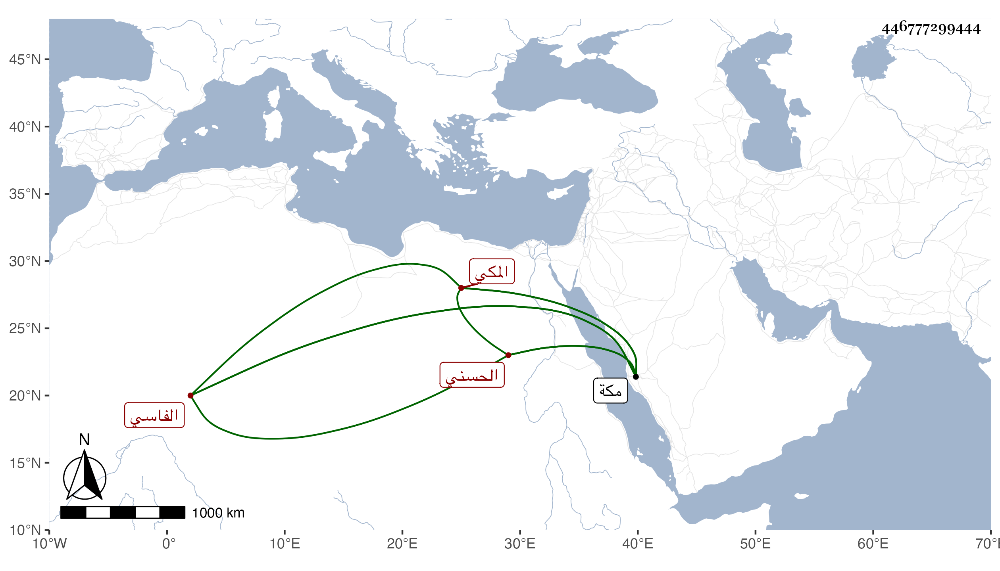

0902Sakhawi.DawLamic.ITO20230111-ara1.EIS1600.446777299444
Biography ID: 446777299444
195
عبد الله بن أبي السرور محمد بن عبد الرحمن بن أبي الخير محمد بن أبي عبد الله محمد بن محمد بن عبد الرحمن الحسني الفاسي المكي أخو عبد اللطيف المالكي الماضي . ولد في ذي القعدة سنة ثماني عشرة بمكة وسمع بها من ابن الجزري وابن سلامة وغيرهما ، وأجاز له في سنة تسع عشرة فما بعدها جماعة . مات في رمضان سنة أربعين بمكة . أرخه ابن فهد .
